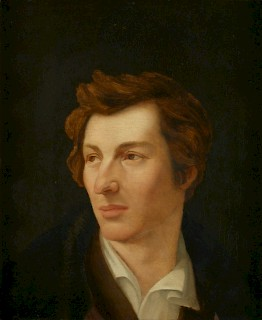

Christian Johann Heinrich Heine wurde am 13. Dezember 1797 als Harry Heine, Sohn eines jüdischen Tuchhändlers, auf der Bolkerstraße in der Düsseldorfer Altstadt geboren, wo er aufwuchs und auch zur Schule ging. Über die Ereignisse während seiner Schul- und Jugendzeit ist leider wenig bekannt, jedoch lässt sich aus heutiger Sicht vermuten, dass Heine aufgrund seines jüdischen Glaubens und seiner geringen Körpergröße häufig mit Diskriminierung und Erniedrigung
Von Yannik Bohlmann, Larissa Dominick, Sophia Jebe & Philipp Peters